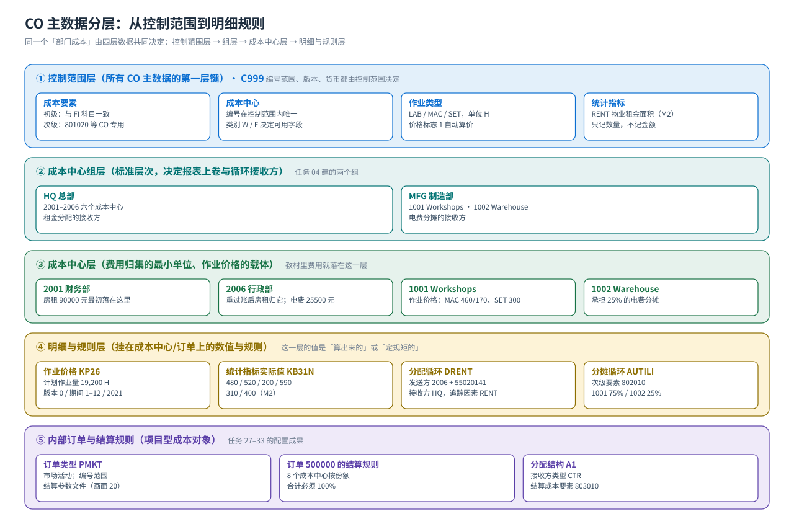
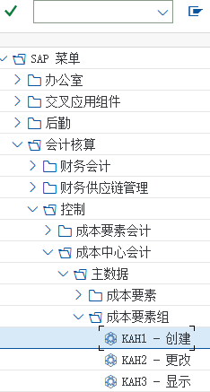

主数据
成本要素（初级/次级）· 成本中心 · 作业类型与价格 · 统计指标 · 结算参数文件
CO 的主数据只有五样，但每一类都有自己的层次：成本要素（初级 = FI 科目 / 次级 = CO 专用）、成本中心（挂在标准层次上）、作业类型与作业价格（LAB/MAC/SET）、统计指标（面积/人数等基数）、结算参数文件与分配结构（结算的规则）。搞清「哪个字段在哪一层、决定什么」，后面的分配分摊与结算才不会卡在报错上。
主数据分层一张图
{kind=link}

为什么「费用进不来 CO」
最常见的原因有两个：① 费用科目没有建成初级成本要素（KA01），这笔费用在 CO 报表里看不到；② 凭证行项目上没填成本对象（成本中心/内部订单），费用只落总账。教材任务 05 的原话给了判断标准：所有损益类科目都是初级成本要素，其中只有 41010901 生产成本－生产订单差异用类别「22 外部结算」，其余都是类别「1 初级成本/成本降低产生的利润」。
成本要素（初级 KA01 / 次级 KA06）
| 字段 | 初级成本要素（教材值） | 次级成本要素（教材值） | 填错的后果 |
|---|---|---|---|
| 编号规则 | 通常与 FI 科目号一致（如 55020141 管理费用-租金） | 自带号段/自定义（如 801020、802010、803010） | 次级成本要素不能和 FI 科目撞号 |
| 名称 | 管理费用-租金 / 电费 / 生产成本－原材料消耗 | 机器时间分配 / 准备时间分配 / 电费分摊 / 市场活动 | 报表上认不出是什么成本 |
| 成本要素类别 | 类别 1 初级成本/成本降低产生的利润（教材任务 05 的提示） | 43（内部作业相关，教材任务 06 的原话）、42（分摊）、21/22（结算） | 类别错 → 过账时「成本要素不允许在该对象上使用」 |
| 借贷/科目类型 | 与 FI 科目的借贷标识一致（损益类） | 无 FI 科目（是 CO 内部项目） | 把利润表科目当成次级要素会过不进账 |
| 有效期 | 按控制范围设定的期间 | 同上 | 过账日期超出有效期会报错 |
教材任务 05/06 的两句关键原话① 「所有损益类科目都是初级成本要素，除了 41010901 生产成本－生产订单差异的成本要素类别是 22 外部结算，其他所有初级成本要素的类别都是 1 初级成本/成本降低产生的利润」——这句话就是「CO 与 FI 一一对应」的最好证据；② 「43 是和内部作业相关的成本要素」—— 作业类型分配时用的就是 43 类次级成本要素（教材 801020 机器时间分配、801030 准备时间分配）。
| 想查什么 | 事务码 / 表 |
|---|---|
| 成本要素清单（初级） | KA03 显示单个 · KAH3 按组显示 · 表 CSKA/CSKB/CSKU |
| 成本要素清单（次级） | KA06 建 · KA23 清单 · 表同上（KATYP 区分类别） |
| 科目 → 成本要素 | FI 建的损益类科目在 CO 里首次使用时自动成为初级成本要素（也可 KA01 手工建） |
| 为什么过不去账 | 成本要素类别的「允许的成本对象」在类别里定义（OKA2/OKA1，教材未演示） |
成本中心主数据
| 视图 / 字段 | 教材值 | 影响哪些流程 |
|---|---|---|
| 基本数据：名称/负责人 | 2006 行政部 Admin Department / Sunny | 报表归口与沟通，不影响记账 |
| 基本数据：成本中心类别 | W（管理机构，教材 2006 的画面） | 决定主数据可用字段；作业类型上还可以限定「成本中心类型 F」（教材 KL01 画面） |
| 基本数据：有效期 | 01.01.2021 – 31.12.9999 | 过账日期必须落在有效期内 |
| 分配：成本中心组 | HQ / MFG | 标准层次位置 = 报表上卷维度；也是循环接收方 |
| 分配：公司代码 / 业务范围 | 按控制范围内的公司代码 C999 | 跨公司代码分配时的归属 |
| 控制：利润中心 | （教材未演示） | 成本中心 → 利润中心的组织上卷与内部资产负债表 |
| 控制：锁定 / 删除标记 | （教材未演示） | 停用成本中心而不删历史数据 |
成本中心的三个「坑」① 新建时系统提示黄色警告（任务 04 教材写明「可以略过」），但项目上要补齐负责人、类别、有效期；② 成本中心一旦有过账，不能删除，只能锁定；③ 标准层次不存在的组要先建组再建成本中心，否则保存报错。
作业类型与作业价格（KL01 / KP26）
| 字段 | 教材值 | 含义 / 影响 |
|---|---|---|
| 作业类型编号 / 名称 | LAB 人工工时 · MAC 机器工时 · SET 准备工时 | 作业类型是「成本中心对外提供的产出」；报工、内部作业分配都按它 |
| 计量单位 | H（小时） | 计划作业量、实际作业量、价格的单位 |
| 成本中心类别 | 教材画面为 F | 限定哪些类别的成本中心能使用该作业类型 |
| 作业类型类别 | 1 手工输入/手工分配 | 决定作业量是手工还是由系统推算 |
| 成本要素分配 | 801020 机器时间分配 · 801030 准备时间分配 | 作业分配时冲销的次级成本要素（43 类） |
| 价格标志 | 1 根据计划作业自动计算 | 决定价格是手工维护还是由计划作业自动算出 |
| KP26 字段 | 教材值（版本 0 / 期间 1–12 / 财年 2021 / 成本中心 1001） | 影响 |
|---|---|---|
| 计划作业量 | MAC / SET 各 19,200 H | 作业分配时的计划总量，也是报表里「计划活动」那一列 |
| 可变价格 | MAC 170.00 | 报工/内部作业计价时用于可变部分 |
| 固定价格 | MAC 460.00 · SET 300.00 | 与可变价格一起构成作业价格（课程场景值） |
| 价格单位 | 画面值 00001（每 1 小时的价格） | 价格单位写错，作业成本会差几十倍 |
| 成本要素（自动带出） | 801020 / 801030 | 来自作业类型主数据 |
| 权数 / 已计划作业 | 权数 1 / 已计划 0 | 权数是作业类型的换算系数；已计划作业由计划作业量合计来 |
作业价格的两种来源教材任务 12 用的是手工维护价格（KP26 直接输 460 / 170 / 300）。标准做法还有「按计划作业自动算价」：先做成本中心计划（
KP06），再让系统用「计划成本 ÷ 计划作业量」算出价格（作业价格重估 KSS2/KSII），月末还可以用实际作业量重算实际价格（KSII）——这些教材未演示，但项目上很常用。统计指标（KK01 / KB31N）
| 字段 | 教材值 | 说明 |
|---|---|---|
| 统计指标编号 / 名称 | RENT（物业租金面积） | 教材任务 18 新建；报表里显示为 Rent Stat. Index |
| 计量单位 | M2（平方米） | 纯数量，不带金额 |
| 类别 | 固定值（教材按成本中心逐月录入） | 也有「总计值」类别，用于人数等跨期不变的指标（标准功能） |
| 各成本中心实际值 | 2001 财务部 480 · 2002 人力资源 520 · 2003 销售部 200 · 2004 市场部 590 · 2005 采购部 310 · 2006 行政部 400（单位 M2） | 任务 19 用 KB31N 输入，期间 3、凭证日期 17.03.2021 |
| 用途 | 作为分配循环的「接收方追踪因素」 | 任务 20 的追踪因素 = 5 实际统计关键指数 + 统计指标 RENT |
结算参数文件与分配结构（结算的规则）
| 对象 | 教材值 | 作用 |
|---|---|---|
| 结算参数文件 Settlement Profile | 订单类型 PMKT 上选择，画面值 20（教材后文文字写 100） | 规定结算的接收方类别、分配结构、是否生成结算凭证、允许的接收方等 |
| 分配结构 Allocation Structure | A1（教材称「CO 分配结构」） | 把「源」成本要素归组，并指定对应的结算成本要素（教材用 803010） |
| 结算成本要素 | 803010（名称「市场活动」，接收方类型 CTR） | 订单余额结算到成本中心时使用的次级成本要素（21 类结算要素） |
| 结算规则 Settlement Rule | 订单 500000 上按成本中心维护份额：1001 20% · 1002 15% · 2001 5% · 2002 5% · 2003 30% · 2004 10% · 2005 10% · 2006 5% | 决定「结给谁、结多少」；份额合计必须等于 100% |
教材这里有个不一致，讲课时要说明任务 27 的订单类型画面上，结算参数文件填的是
20；但任务 28/29 的文字又写「结算参数文件 100」。教材的原话是「双击结算参数文件100，如果没有，则点击新条目，然后回头修改上一步的结算参数文件，当时我们选择的为20」。教学口径：以自己系统里真实存在的参数文件为准，并且订单类型里的值与分配结构必须对得上 （订单类型 → 结算参数文件 → 分配结构 → 结算成本要素，这条链断一环，KO88 就报错）。建主数据时最该盯住的 8 个字段
| 字段 | 在哪 | 教材值 | 填错的后果 |
|---|---|---|---|
| 成本要素类别 | 成本要素主数据 | 1（初级）/ 43 · 42 · 21（次级） | 过账报错或成本进不了报表 |
| 成本中心有效期 | 成本中心主数据 | 01.01.2021 – 31.12.9999 | 过账日期超出区间，凭证保存失败 |
| 成本中心组（标准层次位置） | 成本中心主数据 | HQ / MFG | 报表上卷与循环接收方取不到数 |
| 成本中心类别 | 成本中心主数据 | W（管理）/ F（生产） | 作业类型无法在该成本中心上使用 |
| 作业类型计量单位 | 作业类型主数据 | H（小时） | 价格单位与作业量不一致，作业成本差倍数 |
| 价格单位 / 权数（KP26） | 作业价格 | 00001 / 权数 1 | 价格被放大或缩小 N 倍 |
| 成本要素分配（作业类型） | 作业类型主数据 | 801020 / 801030 | 作业分配找错成本要素，报表串行 |
| 结算参数文件 / 分配结构 | 订单类型与结算配置 | PMKT → 20（画面）→ A1 → 803010 | KO88 结算报「没有分配结构 / 没有结算成本要素」 |
教材画面（主数据）


{kind=link}
